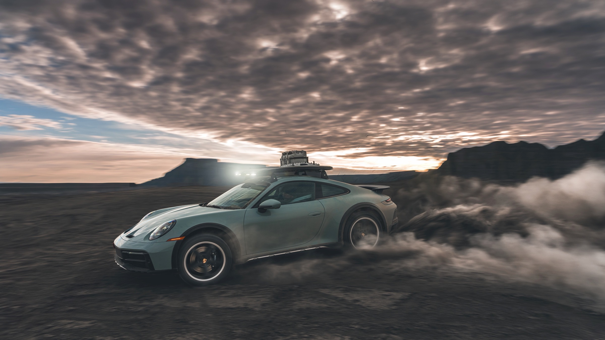
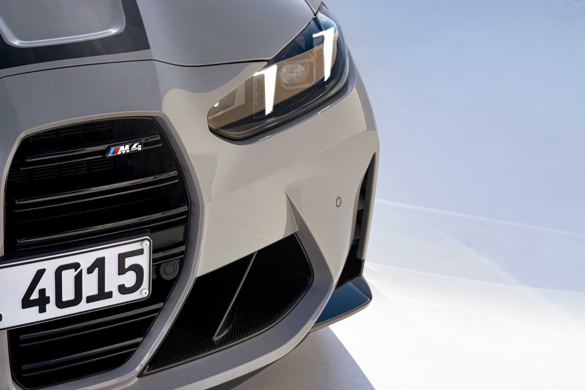
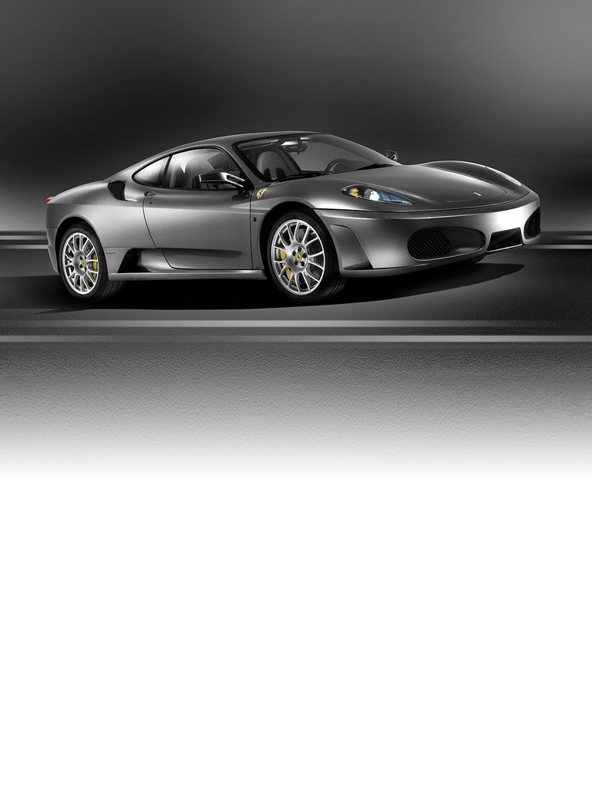
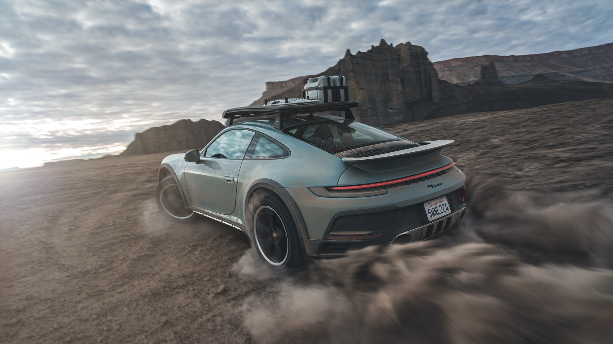
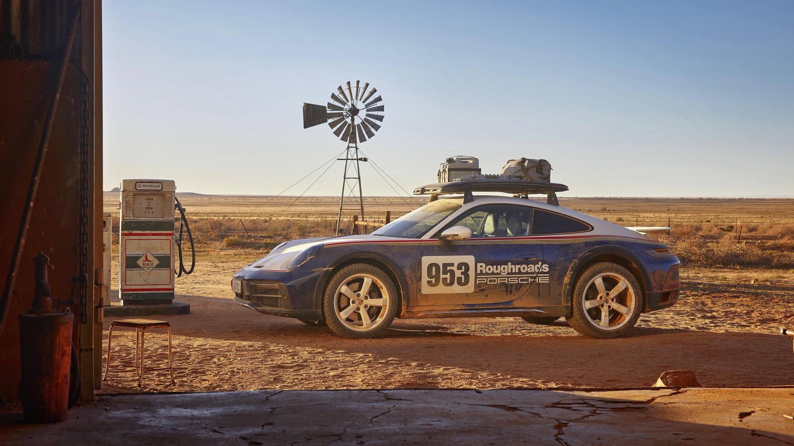
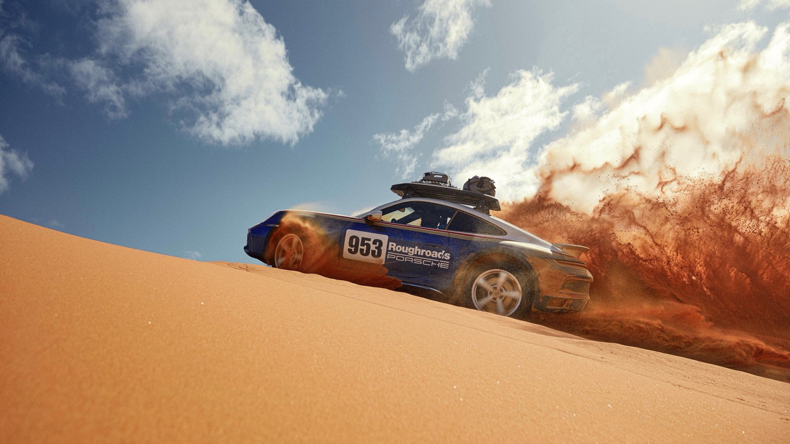
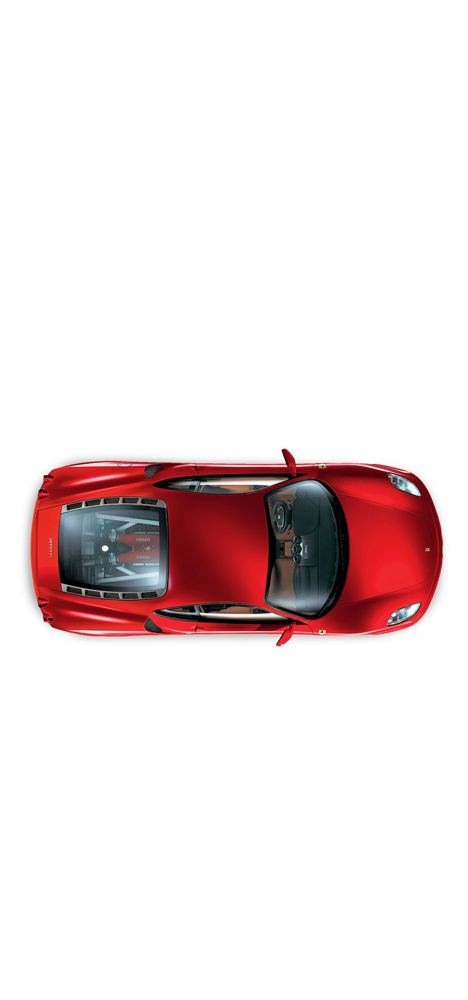

Porsche
911s, Macan, Cayenne, GT cars, and the rest of the list, sourced to spec, including complicated paper.
Image: Porsche AG

Porsche, BMW, Ferrari, Aston Martin, and other exotics. New allocations, pre-owned sourcing, titles in transit, cars not in the seller’s name, salvage and damage. Texas.
Start an acquisitionImage: Porsche AG · 911 Dakar launch, Moab. Not inventory.
Dealers represent the seller. Provenance represents you. We buy Porsche, BMW, Ferrari, Aston Martin, and other exotics — new and pre-owned — and we close the paper, including the transactions other buyers will not touch.
911s, Macan, Cayenne, GT cars, and the rest of the list, sourced to spec, including complicated paper.
Image: Porsche AG

M cars, 3, 5, X. Mid-market through high-value, bought on your side of the table.
Image: BMW AG
296 allocation and sourcing, Roma, Purosangue, and used cars, bought on your side of the table rather than a dealer waitlist pitch.
Image: Ferrari S.p.A.

Used Ferrari, Aston Martin, Porsche, and similar. Private party, out of state, and cars that never hit a local lot.
Image: Ferrari S.p.A.

Image: Ferrari S.p.A. · 296 launch. Press photography, not Provenance inventory.
If the car is right and the paper is a mess, that is still a deal. We work titles, ownership chains, and condition so the purchase actually closes.
The car is sold. The title is still moving. We keep the transaction alive and get the paper into your name instead of letting the deal die in the mail.
Title in transit in TexasEstate, company title, skipped transfers, out-of-state owner. We work the chain of ownership rather than walking because the name on the title does not match the person with the keys.
When the name does not matchBranded titles, rebuilt, flood, accident history. We inspect, price the actual car, and close when the numbers still work, without pretending it is a clean example.
Salvage Porsche and BMW


Image: Porsche AG · 911 Dakar launch. Press photography, not Provenance inventory.
Used Ferrari, Aston Martin, Porsche, and other exotics. The car may be in another state, still titled to an estate, or sitting with a dealer who will not take a messy file. We buy that car on your side of the table. The F430 photographs are Ferrari press images, not cars we have for sale.
Pre-owned exotic sourcing in Texas Ferrari 296 sourcing Sourcing service


Search, inspect, negotiate, title, deliver. You stay off the showroom floor and out of the paperwork pile.
Porsche, BMW, Ferrari, Aston Martin, and other exotics. New allocations, private party, dealer, out of state. We find the car, negotiate on your behalf, and buy it.
AcquisitionTitles in transit, cars not in the seller’s name, salvage and damage, incomplete files. The car is only half the deal; the paper is the other half.
Buyer’s agentA particular spec, a used Ferrari or Aston that is not listed, a 296 path, a classic that has to be right. We search beyond what is sitting on a lot this week.
SourcingInspection, history, and negotiation for older cars where provenance actually matters, including messy ownership along the way.
ClassicsPrivate sale, dealer, or auction. We manage disposition so you are not the one fielding the lowball texts.
DispositionTexas title problems, salvage Porsches, used Ferraris. Written for the buyer who already has a car or a complication, not a brochure.
How a Texas purchase still closes when the title is in the mail, at the lender, or stuck at TxDMV.
ReadEstate, company, skipped transfer. What has to be true before you wire money.
ReadBuying a branded-title Porsche or BMW in Texas without pretending the car is clean.
ReadUsed Ferrari, Aston Martin, and Porsche sourcing when you are not shopping a dealer lot.
ReadAllocation, dealer path, and used 296s for Texas buyers. Press photos, not a car on our floor.
ReadEvery dealership represents the seller. Provenance represents you.
Based in Austin, working across Texas. We acquire Porsche, BMW, Ferrari, Aston Martin, and other exotics — new and pre-owned — and we stay in the deals that stall on title, ownership, or condition.
Consultation is complimentary. Fees are tailored to the acquisition; there is no published rate card. WhatsApp and Signal if you would rather not email.
Start an acquisitionTell us the car, the complication, or both. Private consultation. No showroom, no inventory pitch.
Complimentary to begin. Fees are set per engagement.
mason@provenance-auto.com · Austin · all of Texas
WhatsApp · Signal